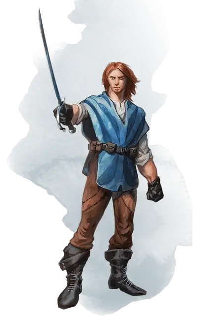

Ренейр Неверембер
Renaer Neverember
Средний Гуманоид (Человек иллусканец), хаотично-добрый, именной НИП

Класс Доспеха 17 (кожаный доспех)
Хиты 66 (12к8 + 12)
Скорость 30 футов
| мод | спас | ||
|---|---|---|---|
| СИЛ | 12 | +1 | +1 |
| ЛОВ | 18 | +4 | +4 |
| ТЕЛ | 12 | +1 | +1 |
| мод | спас | ||
|---|---|---|---|
| ИНТ | 14 | +2 | +2 |
| МДР | 11 | +0 | +0 |
| ХАР | 15 | +2 | +2 |
Навыки Акробатика +8, Атлетика +5, Убеждение +6
Чувства пассивное Восприятие 10
Языки Общий
Опасность 3 (700 опыта)
Бонус мастерства +2
Особенности
Проворный. . Ренейр может каждый ход бонусным действием совершать Рывок или Отход.
Элегантная защита. . Пока Ренейр носит лёгкую броню или не носит броню и не носит щит, к КД добавляется модификатор Харизмы.
Действия
Мультиатака. . Ренейр совершает три атаки: одну кинжалом и две рапирой.
Кинжал. . Рукопашная или дальнобойная атака оружием: +6 к попаданию, досягаемость 5 футов или дистанция 20/60 футов, одна цель. Попадание: 6 (1к4 + 4) колющего урона.
Рапира. . Рукопашная атака оружием: +6 к попаданию, досягаемость 5 футов, одна цель. Попадание: 8 (1к8 + 4) колющего урона.
Описание
Блудный сын Дагульта Неверембера, бывшего Явного лорда Глубоководья и нынешнего лорда Невервинтера. Отец с сыном друг друга не переносят, и Ренейр больше всего ненавидит, когда приходится разбираться с проблемами, созданными его отцом. Их родство выдают приятная внешность, любовь к выпивке и склонность к дипломатии, но при этом Ренейр лишён отцовских воинственности, вспыльчивости и предвзятости.
Ренейр живёт на огромное наследство, завещанное ему матерью. С возрастом он забросил поиски приключений и немного остепенился. Став Арфистом, он занялся защитой жителей Глубоководья от тех, кто, подобно его отцу, хочет лишить их денег и прав. Ему принадлежит четырёхэтажный особняк Неверемберов в Приморском районе. Но Ренейр старается поменьше времени проводить в нём — там за ним вечно следят отцовские лазутчики. Друзьям он позволяет пользоваться домом, когда им заблагорассудится, а сам проводит время в тавернах и пиршественных залах.
Есть те, кто считает, что разрыв с отцом — лишь показуха и что всякий Неверембер — враг Глубоководья.
Ренейр в ответ на такие обвинения лишь пожимает плечами и двигается дальше. У него хватает влиятельных друзей, прикрывающих его.